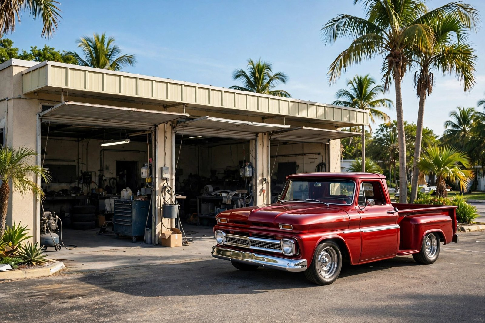
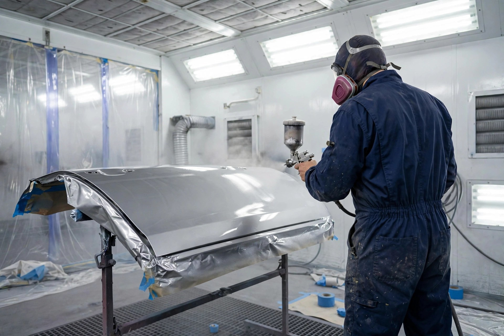
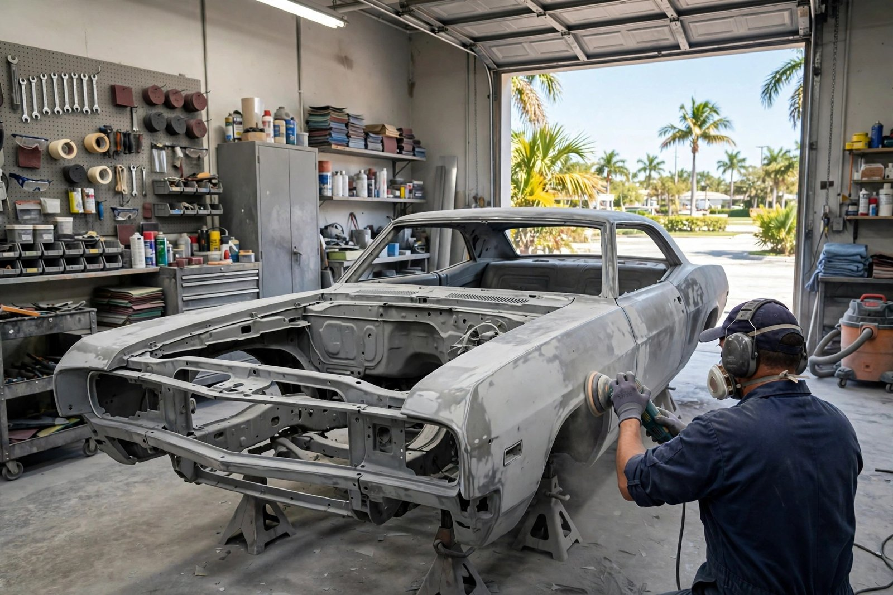
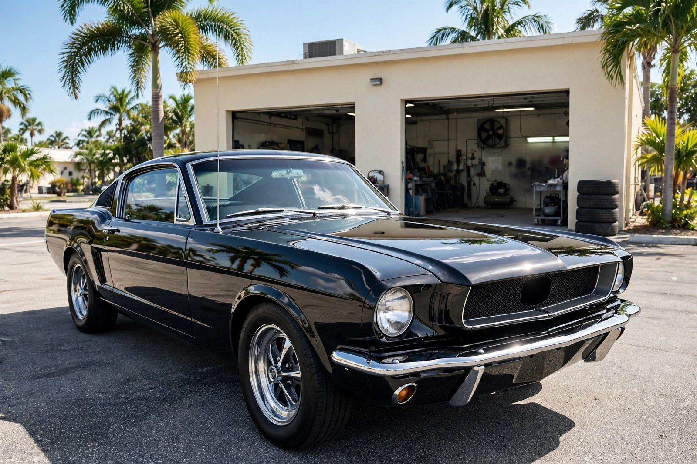

Collision Repair
Accident damage made like new again — panels, bumpers and body lines restored with care.

Tampa, Florida · Family body shop since 1972
Auto body repair & custom paint on North Florida Ave since 1972 — honest work, clearly explained, done right the first time.
What we do
Accident damage made like new again — panels, bumpers and body lines restored with care.
Dents, dings and rust repair — straightened, filled and finished so it looks factory-fresh.
Anything you can imagine, we can paint — from classic restorations to one-of-a-kind custom designs.
Parking-lot dings, scratches and scuffs erased — fast turnarounds without the body-shop drama.
Full resprays and panel refinishing — deep, even color with a professional gloss finish.
Seamless color matches on repaired panels — your car looks like the damage never happened.

Why choose us
Jim Batts has been Tampa's neighborhood body shop since 1972 — a craftsman who treats every car, from daily drivers to custom showpieces, like it's his own.
The shop in action


Word on the street
Good to know
No — stop by during our hours, or call (813) 223-3225 first so we can take a look right away.
Collision damage, dents, scratches, rust and paint problems — everything that makes your car's body look and feel wrong.
Yes — custom paint jobs are our specialty. From restorations to one-of-a-kind designs, if you can dream it, Jim can paint it.
Monday to Friday, 9 AM to 5 PM. Closed Saturday and Sunday.
Come see us